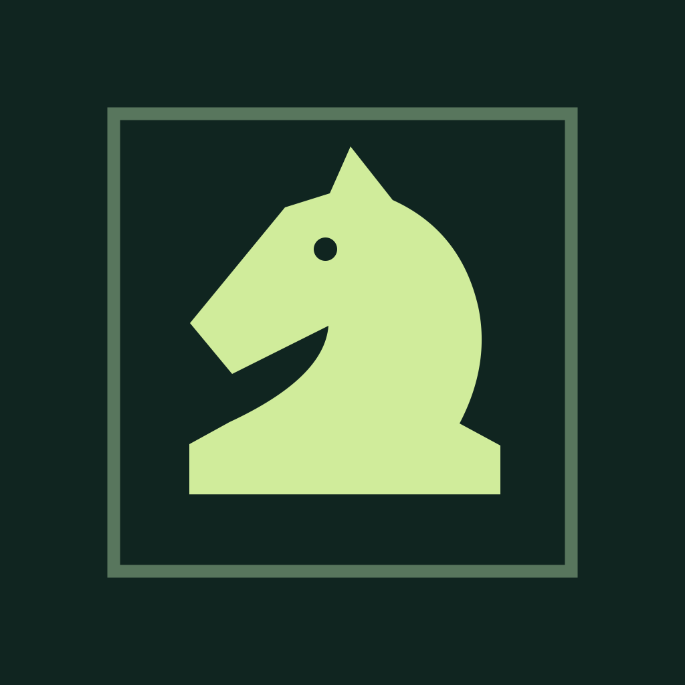
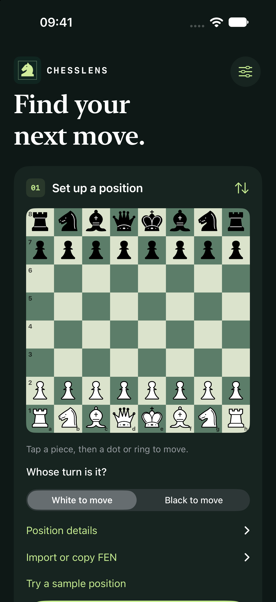

ChessLensiPhone · Offline chess analysis
Find your
next move.
Set up a position, play out a line, or paste a FEN. Stockfish 19 evaluates the board and suggests moves right on your iPhone.
iOS 17 or later · AltStore Classic · No camera scanning in this edition

Install with AltStore Classic
- Set up AltServer and AltStore Classic on a Mac or Windows PC.
- Download the IPA from GitHub Releases and save it to Files. In AltStore, open My Apps → + and select the IPA while AltServer is reachable.
- Refresh from AltStore before the seven-day free signature expires. A GitHub download alone does not install the app.
Your positions stay on your phone.
ChessLens has no account, analytics, remote analysis, or camera access. Read the privacy notes.